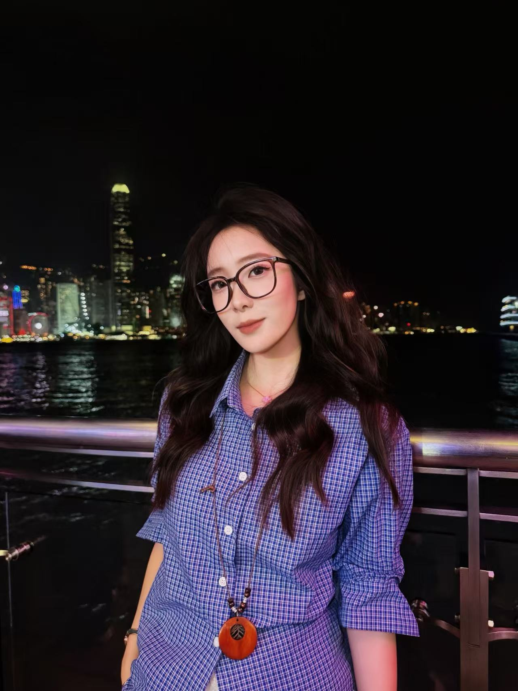

Hi everyone,
I'm Icy from China, and I'm an overseas operations manager.
My education combines Internet and new media, Ai and digital media, while I currently find myself show great interest in new media operation, but I don't limit myself to a specific work.
Whether I'm editing videos that hit millions of views, running influencer campaigns, or brainstorming the next big social media trend, I love bringing ideas to life.
When I was young, I had many hobbies, such as practicing calligraphy and painting. I have been learning calligraphy for eight years and can write various styles of Chinese characters. Seeing this, you must think that I am a very quiet person. In fact, on the contrary. As I grew older, I found that I preferred to go out and do activities more often. For example, hiking, rock climbing, cycling. I feel that I can acquire strength through these exercises.
Leyao Zeng | Content Creator & Digital Marketer 🚀
🎓 MSc AI & Digital Media @ HKBU
💡 Passionate about storytelling, social media strategy, and data analytics
📸 Capturing moments & creating impactful campaigns
📍 Hong Kong / Guangzhou / Shenzhen